Craft Store: This project is something I've always wanted to work on...
Problem: In my childhood, I used to enjoy making papercraft, designing toys, and creating architectural models. I often wondered what if I could sell these creations and earn my own pocket money. This thought led me to the idea of creating an online platform where I could showcase and sell my crafts.
Furthermore, I noticed that there are many talented handicraft workers who lack a proper platform to showcase and sell their products. They often rely on local markets and struggle to reach a larger audience, limiting their growth potential. This is where my website, "Craft Store," comes into play.
Craft Store aims to provide a platform for both established small businesses and individual crafters to sell their handcrafted products easily. By leveraging a recommendation system and implementing various filtering options, the website ensures that customers can discover a wide range of crafts based on their preferences. The platform not only benefits sellers by increasing their reach and potential customer base but also offers customers a convenient and diverse shopping experience.
Technologies Used : MERN stack (MongoDB database , Express , React framework , Node.js

 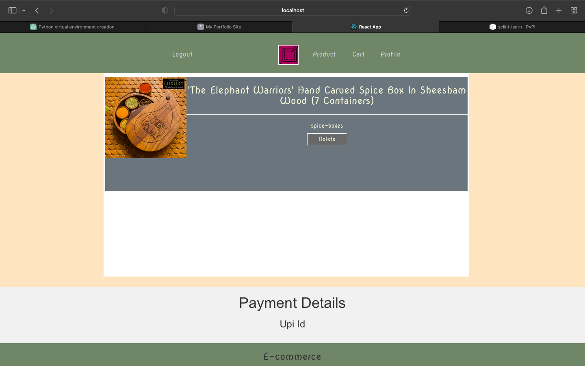
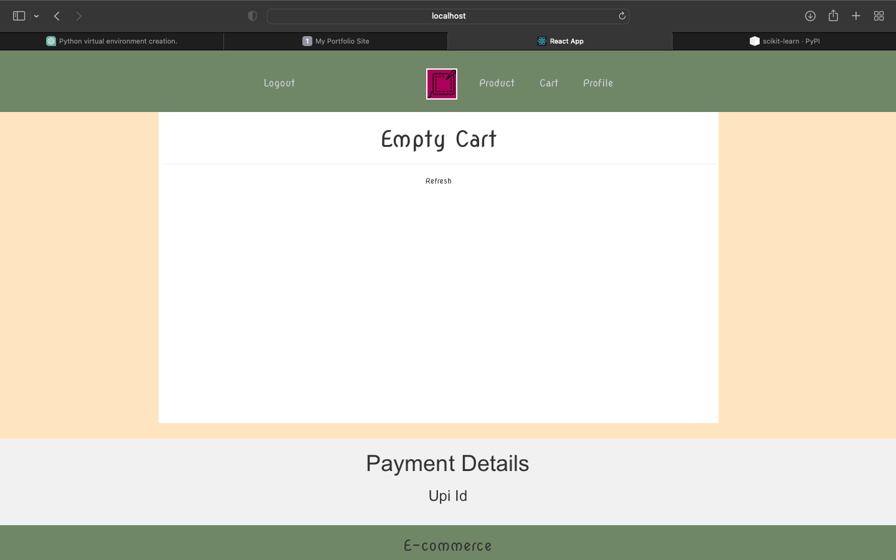
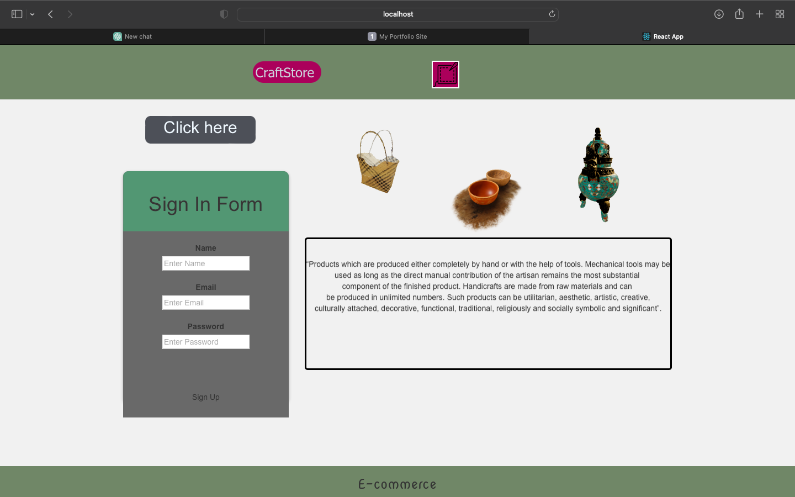
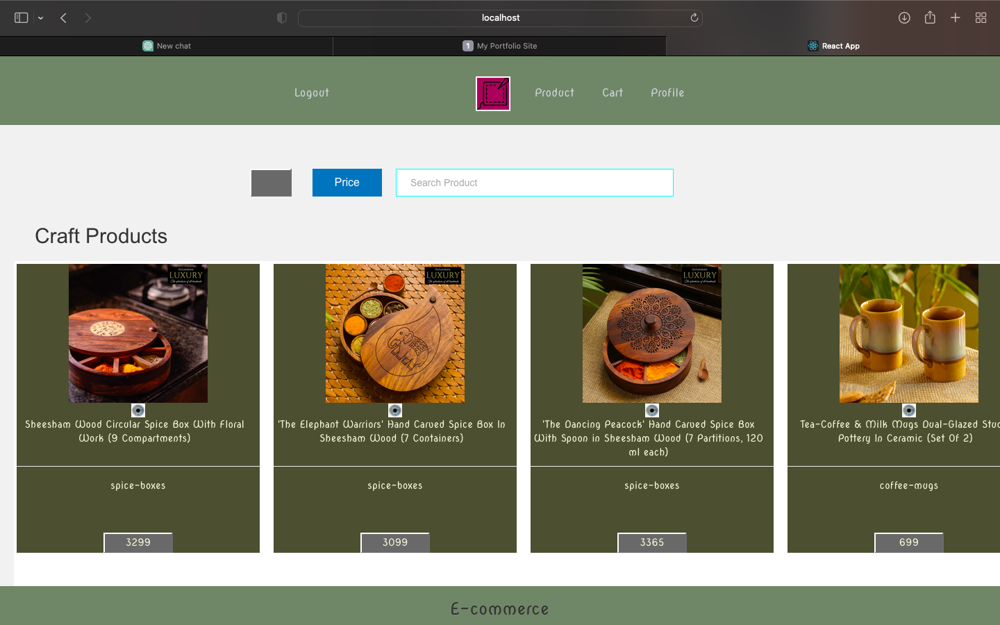
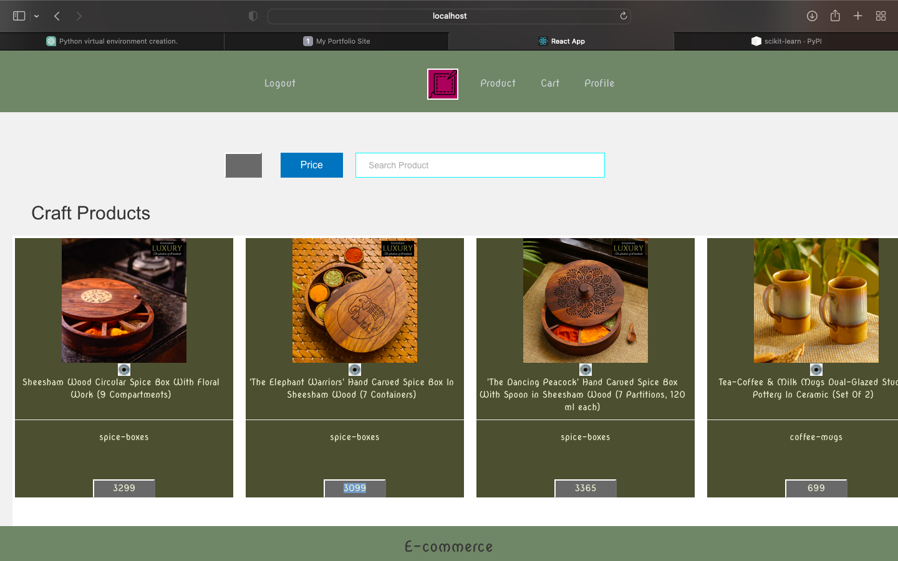
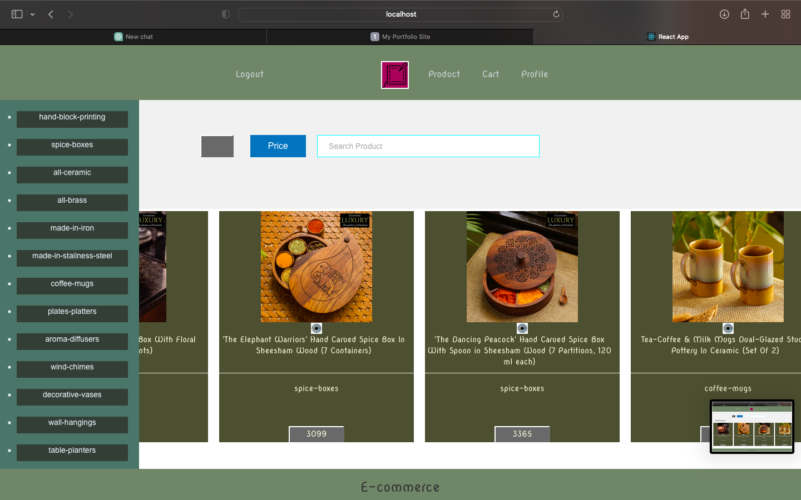
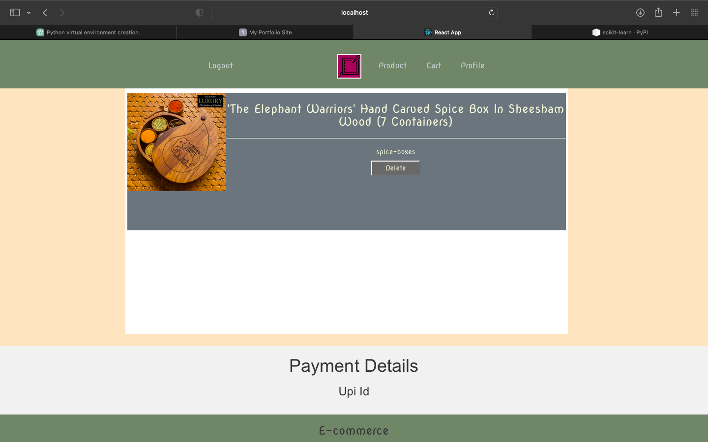
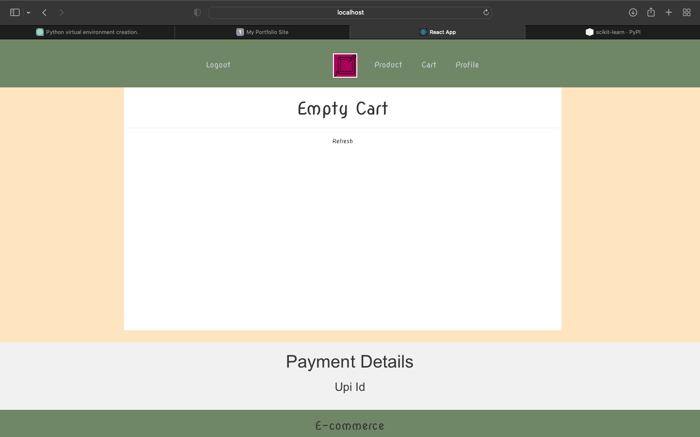
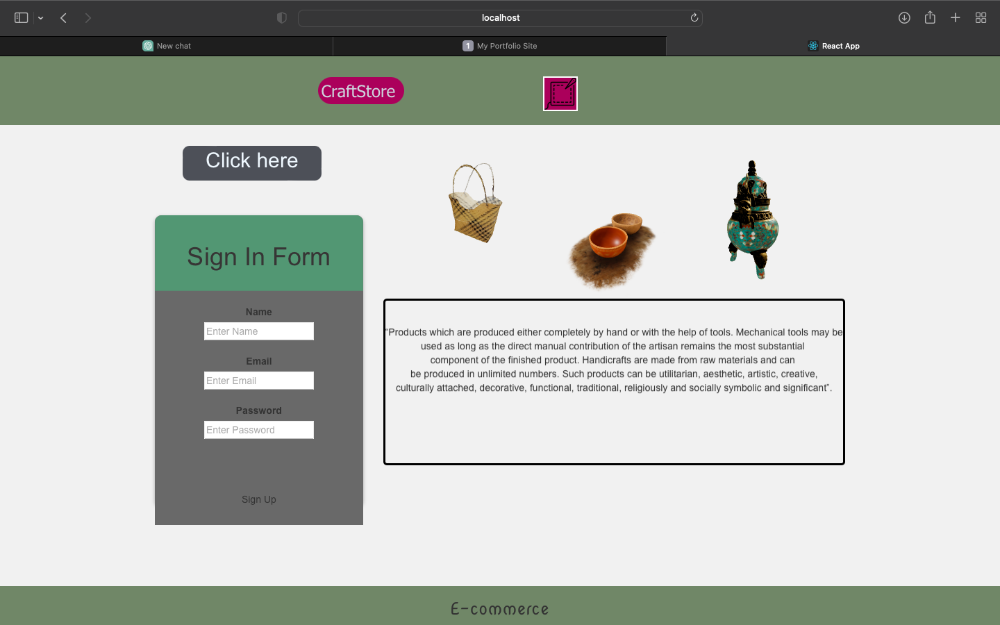
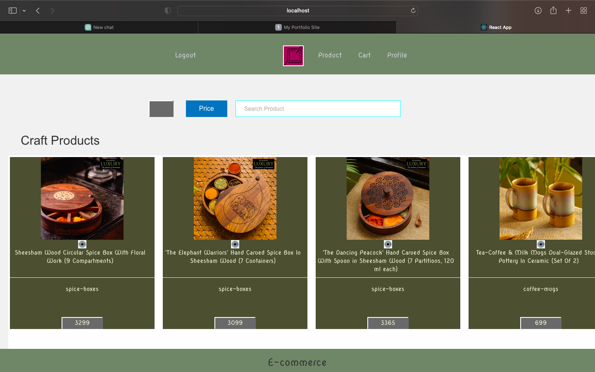
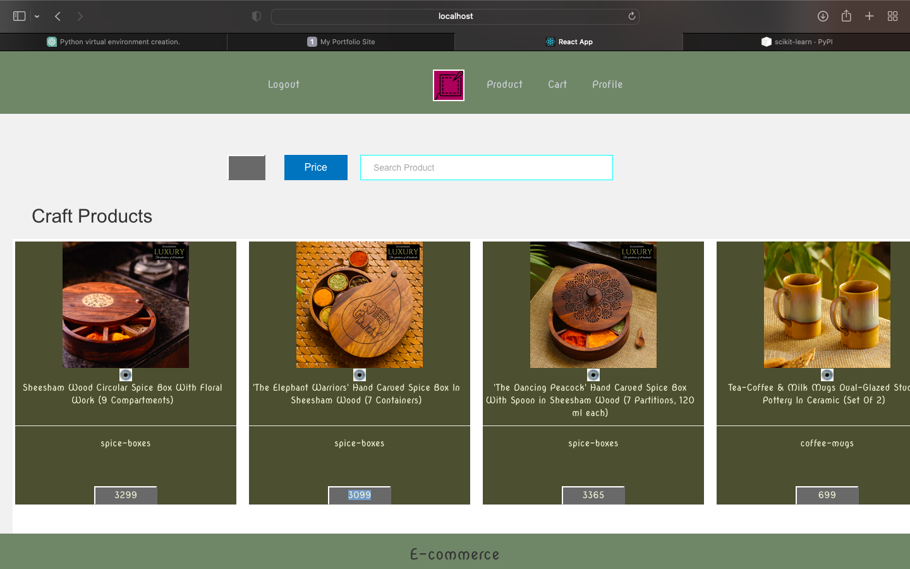
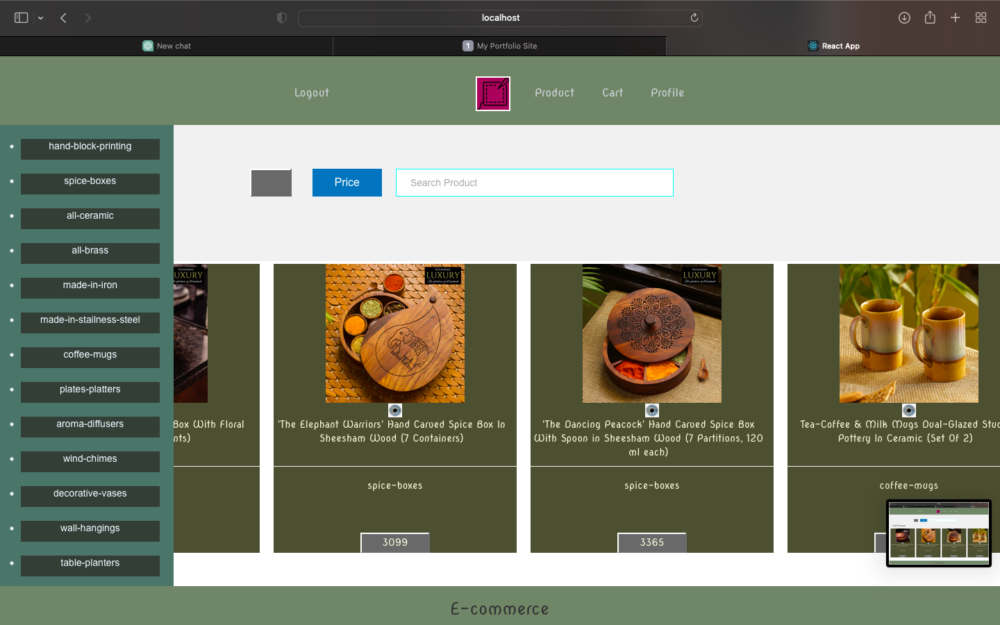
 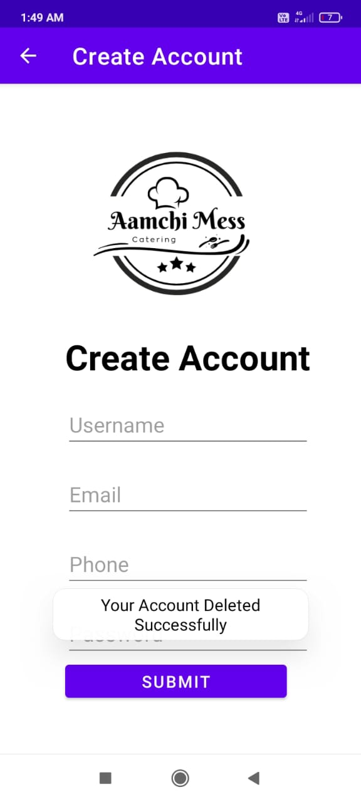
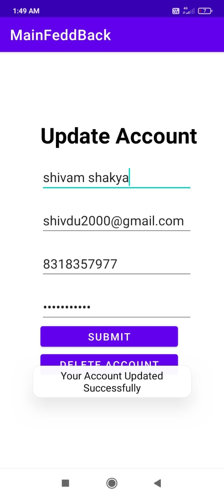
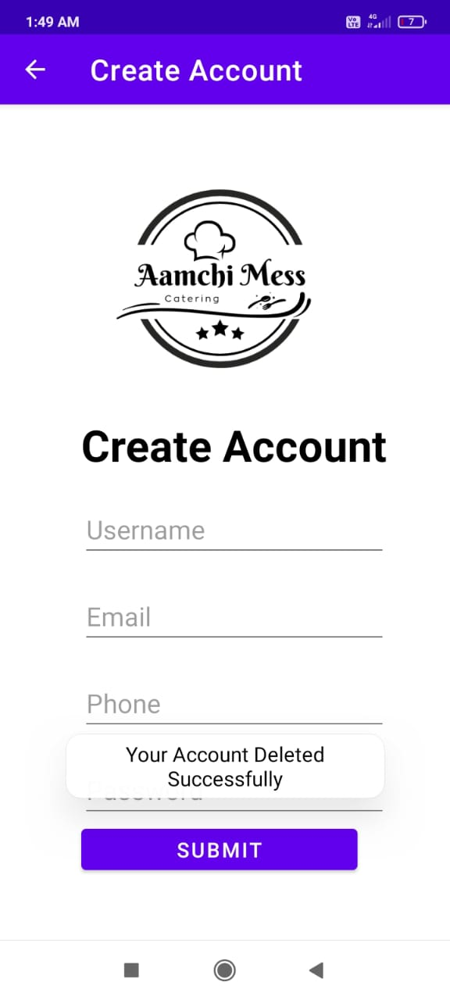
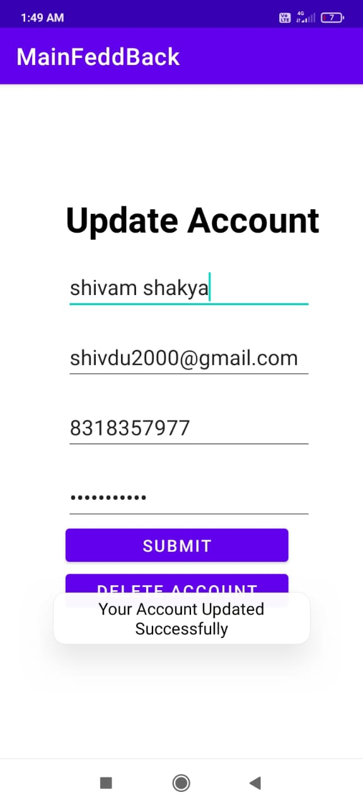